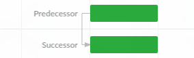
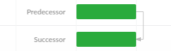
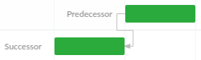

An event can be either automatically (default) or manually scheduled. This is defined by the manuallyScheduled event flag.
Events that are manually scheduled are not affected by the automatic rescheduling process, they are meant to be adjusted manually by a user.
Please note that any event can be excluded from the scheduling process by deactivating it.
This can be done by setting its inactive field to true.
Such inactive events do not push their linked tasks nor do they rollup their attributes to parent events.
The Gantt scheduling engine will update start and end dates of automatically scheduled events based on their constraints, links and position in the task hierarchy.
This means that the startDate and endDate will be revalidated and
might be recalculated as soon as the event is added or loaded to a project.
In a forward scheduled project (default), the Gantt engine schedules events as soon as possible (ASAP).
For such projects, the start date is mandatory and sets an implicit Start no earlier than constraint
(see constraint details in below chapters) inherited by all events. This means any event having no restrictions will fall back to that date.
The end date of a forward scheduled project is a calculated value equal to the latest end date of its events.
In a backward scheduled project, the Gantt engine schedules events as late as possible (ALAP).
In such a project, the end date value is mandatory and the start date is calculated as the earliest start date of the project events.
The project end date creates an implicit Finish no later than constraint inherited by all events.
This means that any event with no restrictions will fall back to finish on that date.
When an Event changes, its linked tasks will be rescheduled automatically.
In forward scheduled projects, successors react on their predecessor changes and in backward scheduled projects,
the predecessors react to changes made in their successors.
How dependent events will be updated after a modification depends on the dependency type.
The Gantt engine supports the following four types of dependencies:
The default type of a dependency is "Finish-to-Start" (FS). This type of dependency restricts the dependent event
to not start earlier than the end date of the preceding event.
Lead (or "negative lag") will accelerate the succeeding event by the number of time units specified.
Please note, the lag value specifies the amount of working time. The
calendar controlling which time to use is defined by the calendar field. By
default, the successor calendar is used.
An event constraint defines boundaries for the schedulable date range of an event and it is taken into account
when the engine schedules the project events.
A constraint is a combination of two event properties: constraintType and constraintDate.
The date range specified by a constraint, restricts the event start / end dates to be not earlier than,
not later than or equal to the provided constraintDate.
As mentioned above, an event having no restrictions is scheduled on the project start for forward projects
(and on the project end date for backward projects). When an event is manually dragged by a user in a Gantt chart,
the Gantt enforces the position by setting a constraint on the event.
In a forward scheduled project it uses:
There are two constraint types in this group: Must start on (MSO) and Must finish on (MFO).
They force an event to start / finish exactly on the date provided.
These constraints share the same priority with event dependencies. They all work together respecting the event working time:
Start no earlier than (SNET) - restricts the event to start on or after the specified date.
Finish no earlier than (FNET) - restricts the event to finish on or after the specified date.
Start no later than (SNLT) - restricts the event to start before (or on) the specified date.
Finish no later than (FNLT) - restricts the event to finish before (or on) the specified date.
Effectively, the event start/end dates are calculated as aggregated values taking into account both dependencies
and such constraints. The earliest start date for an event is computed as the latest of the earliest start allowed by
its constraint and the earliest start allowed by its dependencies.
An example: Event A has two incoming dependencies which don't allow it to start earlier than 01/18/2017 and the event
has a SNET constraint which forces it to start not earlier than 01/17/2017. In this case, the resulting earliest
start date of the event is 01/18/2017. If we change the constraint date to 01/19/2017 the resulting earliest start
date will become 01/19/2017.
When scheduling events, the Gantt engine takes the hierarchy into account by following these two principles:
Each event inherits its parent (summary) event restrictions (dependencies and constraints).
A summary event start date and end date should match the minimum
start date and maximum end date of its children respectively. Its
effort equals the sum of the effort values of all its children.
The % completed value of a parent event is derived from its children,
summarizing the completed duration divided by the total duration of all children.
Following the above rules, the Gantt engine recalculates summary events when their children are updated. The same
goes for the reverse case, child events will react to changes to constraints and dependencies of their parents.
Unlike the dependencies and constraints affecting the event position on the time axis,
the scheduling mode specifies how the event´s own properties depend on each other.
It defines which properties are fixed (provided by user) and which ones should be calculated.
There is also an additional effortDriven flag allowing to fix
the event effort value. When set, it tells the event to preserve its effort
value and instead recalculate other properties.
In the Normal mode (default), the event is scheduled based on information about its start / end dates.
The event effort and assignments are not calculated in this mode.
Fixed Duration mode means that the event has fixed start and end dates
and duration, but its effort is computed dynamically
based on the assigned resources.
A typical example of such an event is a meeting. Meetings typically have pre-defined start and end dates and the
more people are participating in the meeting, the more effort is spent on the event.
When duration of such event increases, its effort gets increased too.
Changes to the effort of such an event will cause assignment units recalculation and vice-versa
(assignments change will cause recalculation of the effort).
Enabling effortDriven for an event will change that behavior and force the event to
always recalculate its assignment units whenever the event changes its duration or
effort.
NOTE: calculations provided by this mode work only if the event has at least one resource assigned.
Fixed Effort mode means that event has a fixed effort and computed duration.
The more resources are assigned to the event, the less the duration will be.
A typical example is a "paint the walls" task - several painters will complete it faster.
Enabling the effortDriven flag makes no sense in this mode.
NOTE: calculations provided by this mode work only if the event has at least one resource assigned.
Gantt event scheduling
Manually scheduled events
An event can be either automatically (default) or manually scheduled. This is defined by the manuallyScheduled event flag. Events that are manually scheduled are not affected by the automatic rescheduling process, they are meant to be adjusted manually by a user.
Inactive tasks
Please note that any event can be excluded from the scheduling process by deactivating it. This can be done by setting its inactive field to
true. Such inactive events do not push their linked tasks nor do they rollup their attributes to parent events.Automatic event scheduling
The Gantt scheduling engine will update start and end dates of automatically scheduled events based on their constraints, links and position in the task hierarchy. This means that the startDate and endDate will be revalidated and might be recalculated as soon as the event is added or loaded to a project.
Project direction
The Gantt engine supports both forward and backward scheduling, controlled by the project direction config.
Forward scheduled project
In a forward scheduled project (default), the Gantt engine schedules events as soon as possible (ASAP). For such projects, the start date is mandatory and sets an implicit Start no earlier than constraint (see constraint details in below chapters) inherited by all events. This means any event having no restrictions will fall back to that date.
The end date of a forward scheduled project is a calculated value equal to the latest end date of its events.
Backward scheduled project
In a backward scheduled project, the Gantt engine schedules events as late as possible (ALAP). In such a project, the end date value is mandatory and the start date is calculated as the earliest start date of the project events. The project end date creates an implicit Finish no later than constraint inherited by all events. This means that any event with no restrictions will fall back to finish on that date.
Propagating changes through event dependencies
When an Event changes, its linked tasks will be rescheduled automatically. In forward scheduled projects, successors react on their predecessor changes and in backward scheduled projects, the predecessors react to changes made in their successors.
How dependent events will be updated after a modification depends on the dependency type. The Gantt engine supports the following four types of dependencies:
Finish-to-Start
The default type of a dependency is "Finish-to-Start" (FS). This type of dependency restricts the dependent event to not start earlier than the end date of the preceding event.
Start-to-Start
With this dependency type, the succeeding event is delayed to not start earlier than the start of the preceding event.
Finish-to-Finish
The succeeding event cannot finish before the completion of the preceding event.
Start-to-Finish
The finish of the succeeding event is constrained by the start of the preceding event. The successor cannot finish before the predecessor starts.
Dependency lead and lag
A dependency can have a lag (or lead) value which can delay the succeeding event by the number of lag units specified.
Lead (or "negative lag") will accelerate the succeeding event by the number of time units specified.
Please note, the lag value specifies the amount of working time. The calendar controlling which time to use is defined by the calendar field. By default, the successor calendar is used.
Event constraint effect on the scheduling
An event constraint defines boundaries for the schedulable date range of an event and it is taken into account when the engine schedules the project events.
A constraint is a combination of two event properties: constraintType and constraintDate. The date range specified by a constraint, restricts the event start / end dates to be not earlier than, not later than or equal to the provided constraintDate.
As mentioned above, an event having no restrictions is scheduled on the project start for forward projects (and on the project end date for backward projects). When an event is manually dragged by a user in a Gantt chart, the Gantt enforces the position by setting a constraint on the event. In a forward scheduled project it uses:
And for a backward scheduled project it uses:
The way a constraint affects an event depends on its type. There are two group of constraints available:
Inflexible constraints
There are two constraint types in this group: Must start on (MSO) and Must finish on (MFO). They force an event to start / finish exactly on the date provided.
Semi-flexible constraints
These constraints share the same priority with event dependencies. They all work together respecting the event working time:
Effectively, the event start/end dates are calculated as aggregated values taking into account both dependencies and such constraints. The earliest start date for an event is computed as the latest of the earliest start allowed by its constraint and the earliest start allowed by its dependencies.
An example: Event A has two incoming dependencies which don't allow it to start earlier than 01/18/2017 and the event has a SNET constraint which forces it to start not earlier than 01/17/2017. In this case, the resulting earliest start date of the event is 01/18/2017. If we change the constraint date to 01/19/2017 the resulting earliest start date will become 01/19/2017.
Taking into account the project hierarchy
When scheduling events, the Gantt engine takes the hierarchy into account by following these two principles:
FYI: calculation of % done for parent tasks can be disabled by setting autoCalculatePercentDoneForParentTasks to
false.Following the above rules, the Gantt engine recalculates summary events when their children are updated. The same goes for the reverse case, child events will react to changes to constraints and dependencies of their parents.
Event scheduling mode
Unlike the dependencies and constraints affecting the event position on the time axis, the scheduling mode specifies how the event´s own properties depend on each other. It defines which properties are fixed (provided by user) and which ones should be calculated.
There are four scheduling modes available in the Gantt engine:
There is also an additional effortDriven flag allowing to fix the event effort value. When set, it tells the event to preserve its effort value and instead recalculate other properties.
Normal
In the Normal mode (default), the event is scheduled based on information about its start / end dates. The event effort and assignments are not calculated in this mode.
This mode is always used for summary events.
The effortDriven flag is not used in this mode.
Fixed Duration
Fixed Duration mode means that the event has fixed start and end dates and duration, but its effort is computed dynamically based on the assigned resources.
A typical example of such an event is a meeting. Meetings typically have pre-defined start and end dates and the more people are participating in the meeting, the more effort is spent on the event. When duration of such event increases, its effort gets increased too.
Changes to the effort of such an event will cause assignment units recalculation and vice-versa (assignments change will cause recalculation of the effort).
Enabling effortDriven for an event will change that behavior and force the event to always recalculate its assignment units whenever the event changes its duration or effort.
NOTE: calculations provided by this mode work only if the event has at least one resource assigned.
Fixed Effort
Fixed Effort mode means that event has a fixed effort and computed duration. The more resources are assigned to the event, the less the duration will be.
A typical example is a "paint the walls" task - several painters will complete it faster.
Enabling the effortDriven flag makes no sense in this mode.
NOTE: calculations provided by this mode work only if the event has at least one resource assigned.
Fixed Units
Fixed Units mode means, that event has fixed assignments and computed duration or effort.
Changes to the effort of such an event will cause duration recalculation and vice-versa (duration change will cause recalculation of effort).
Changes of the assignment of such an event will cause effort recalculation and duration recalculation if the effortDriven flag is enabled.
NOTE: calculations provided by this mode work only if the event has at least one resource assigned.